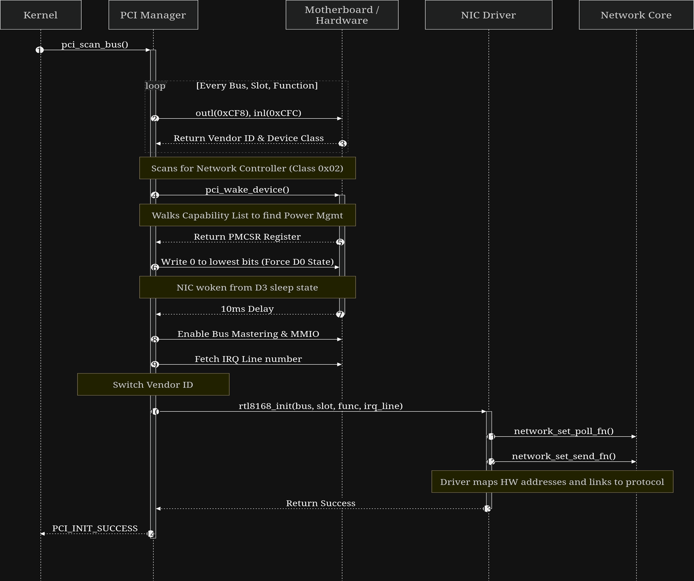
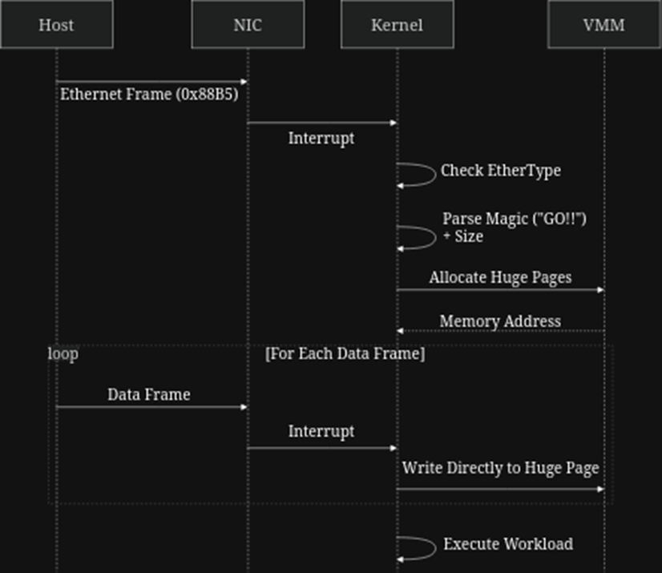
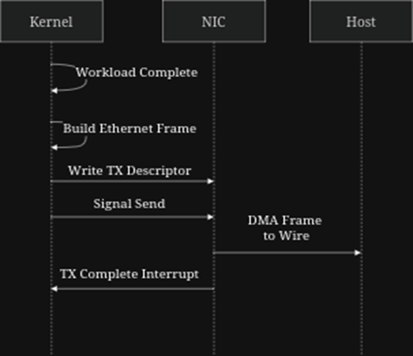

NETWORK COMPONENTS
{kind=link}

High-level overview of the Math Unikernel network stack and PCI bus integration.
pci.c (Peripheral Component Interconnect)
Overview
The Peripheral Component Interconnect (PCI) bus is the standard hardware interface through which the CPU discovers and communicates with expansion devices such as network controllers, storage adapters, and graphics cards. Each device on the bus is uniquely identified by a combination of bus number, slot number, and function number, and exposes a standardized 256-byte configuration space that the CPU can read to determine the device’s vendor, class, and memory-mapped or port-mapped I/O addresses. This module performs a full enumeration of the PCI bus to locate a supported network controller. Once found, it handles the complete bring-up sequence: waking the device from a low-power sleep state (D3) if necessary, enabling bus mastering and memory-mapped I/O access in the device’s command register, resolving the hardware IRQ line, and dispatching initialization to the appropriate NIC driver (Intel I219-LM or Realtek RTL8139) based on the device’s vendor ID.
System Integration & Initialization
The PCI bus scan is the final step of the kernel’s hardware initialization sequence, called in kernel_main() after the display and serial drivers are online. It is positioned last among the boot-time initializations because it is the only subsystem that allocates physical and virtual memory at runtime (via the NIC drivers it dispatches to), requiring a fully operational PMM and VMM. It also registers interrupt handlers, requiring the IDT to already be loaded. pci_scan_bus() returns PCI_INIT_SUCCESS if a supported network controller is found and its driver is successfully dispatched, or 0 if no compatible device is detected. The kernel tracks this result in the shared init_status bitfield. A missing network controller is a fatal error; the kernel will print NETWORK_CONTROLLER_MISSING and halt via hcf(), as the entire workload delivery pipeline depends on the NIC being operational.
Application Example
The following example demonstrates how pci_scan_bus() is called in the boot sequence and how its result is validated.
#include "headers/pci.h"
#include "headers/kernel_logs.h"
void kernel_main(void) {
uint16_t init_status = 0;
// ... display and serial init ...
// Scan the PCI bus for a supported NIC and initialize it
init_status |= pci_scan_bus();
// Validate — a missing NIC is fatal
if (init_status & PCI_INIT_SUCCESS) {
PRINTS(NETWORK_CONTROLLER_FOUND);
} else {
PRINTS(NETWORK_CONTROLLER_MISSING);
hcf();
}
}
Direct API References:
Macros
PCI_INIT_SUCCESS: Evaluates to 256 (1<<8). Returned by pci_scan_bus() when a supported network controller has been found and its driver successfully dispatched.
Functions
uint32_t pci_read_dword(uint8_t bus, uint8_t slot, uint8_t func, uint8_t offset): The fundamental PCI configuration space accessor. It constructs a 32-bit address from the bus, slot, function, and register offset values and writes it to the PCI CONFIG_ADDRESS I/O port (0xCF8). It then reads the 32-bit result back from the PCI CONFIG_DATA port (0xCFC). All higher-level PCI operations in this module are built on top of this function.Parameters:
bus: The PCI bus number (0–255).slot: The device slot number (0–31).func: The function number within the device (0–7).offset: The byte offset into the device’s configuration space (must be 4-byte aligned; the two lowest bits are masked off).Returns: The raw 32-bit value from the requested configuration register. A vendor field of 0xFFFF indicates no device is present at the given bus/slot/function combination.
uint16_t pci_scan_bus(): Iterates over all 256 buses, 32 slots, and 8 functions of the PCI address space. For each present device, it reads the class code (offset 0x08) and filters for devices matching base class 0x02 (Network Controller) and sub-class 0x00 (Ethernet). When a match is found, it performs the full bring-up sequence: calling pci_wake_device() to exit D3, enabling bus mastering and MMIO in the command register, resolving the IRQ line, and dispatching to either i219_init() or rtl8139_init() based on the vendor ID. The scan halts and returns immediately upon finding the first supported NIC. Returns: PCI_INIT_SUCCESS if a supported NIC was found and initialized, or 0 if the full bus was exhausted without finding a compatible device.
Internal Helpers
void pci_write_dword(uint8_t bus, uint8_t slot, uint8_t func, uint8_t offset, uint32_t data): The write counterpart to pci_read_dword(). Constructs the same 32-bit address and writes the provided data value to the CONFIG_DATA port. Used internally by pci_scan_bus() to enable bus mastering and MMIO in the device command register, and by pci_wake_device() to transition a device out of a low-power state. Not exposed in pci.h.void pci_wake_device(uint16_t bus, uint8_t slot, uint8_t func): Walks the device’s PCI capabilities linked list (starting from offset 0x34) searching for the Power Management capability (ID 0x01). If found, it reads the Power Management Control/Status Register (PMCSR) and checks the two lowest bits for the current power state. If the device is not already in D0 (fully awake), it clears those bits to force a transition to D0 and inserts a software delay of approximately 10ms to allow the hardware to stabilize. If the device reports no capabilities list, the function returns immediately. Not exposed in pci.h.
network.c (Network Layer)
Overview
The network module sits directly above the NIC drivers in the software stack. Its role is to decouple the rest of the kernel from any specific hardware implementation: the NIC drivers call into this layer when a frame arrives, and this layer handles all Ethernet-level filtering, header parsing, and data routing. The NIC driver in use at runtime is itself registered into this layer via function pointers, meaning the loader, kernel state machine, and all other subsystems interact exclusively with this module and have no direct knowledge of whether an RTL8139 or an Intel I219-LM is physically present.
The module implements a two-phase receive protocol built around the custom EtherType 0x88B5. All frames carrying a different EtherType are silently discarded. The first accepted frame is treated as a header frame, containing the 4-byte magic number and the 8-byte payload size; its payload is buffered internally for the loader to consume byte-by-byte via read_ethernet(). Every subsequent frame after the header is confirmed is treated as a data frame and its payload is written directly and contiguously into a caller-supplied destination buffer, typically a VMM-allocated huge page.
 Figure A: The Receive Protocol Sequence. |
 Figure B: The Transfer Protocol Sequence. |
{kind=link}
{kind=link}
System Integration & Initialization
This module has no dedicated initialization function. It is wired up implicitly during the PCI bring-up sequence: after pci_scan_bus() identifies and initializes the NIC hardware, it immediately calls network_set_poll_fn() and network_set_send_fn() to register the driver’s specific polling and transmit routines into the network layer. From that point on, all upper layers interact exclusively with the network API. At the start of every POLLING cycle in the kernel state machine, kernel_main() calls reset_header() to clear all internal header state from the previous transaction before handing control to the loader. The loader then calls unlock() and poll_payload_size(), both of which drive the network layer forward by repeatedly calling read_ethernet() until the full magic number and payload size have been consumed from the header buffer. Once the header is fully consumed, the module automatically transitions to direct-write mode for all subsequent data frames.
Application Example
The following example demonstrates the complete data flow through the network layer for a single workload transaction, from NIC driver registration through payload delivery.
#include "headers/network.h"
#include "nic_drivers/rtl8139.h"
// Step 1 — pci.c wires the NIC driver into the network layer
rtl8139_init(bar0, irq_line);
network_set_poll_fn(rtl8139_poll);
// Step 2 — kernel.c resets header state at the top of each POLLING cycle
reset_header();
// Step 3 — loader.c consumes the header frame byte-by-byte
unlock(); // reads 4 bytes: magic number
poll_payload_size(); // reads 8 bytes: payload size (little-endian)
// Step 4 — loader.c sets the destination buffer and waits for all data frames
network_set_dest(payload_mem, payload_byte_size);
while (network_bytes_received() < payload_byte_size) {
__asm__ volatile("hlt"); // sleep until next NIC interrupt
}
Direct API References:
Macros
ETHERTYPE_CUSTOM: Defined as 0x88B5. The IEEE-reserved EtherType used to identify frames belonging to this system. Any Ethernet frame arriving at the NIC that does not carry this EtherType in bytes 12–13 of the header is silently discarded by network_receive_frame() and never reaches the rest of the kernel.
Functions
void network_set_poll_fn(void (*fn)()): Registers the active NIC driver’s polling function. Once set, this function pointer is called by read_ethernet() whenever it needs to spin-wait for the next byte to arrive and no data is currently available. Called once by pci_scan_bus() immediately after the NIC driver is initialized.Parameters:
fn: A function pointer to the NIC driver’s poll routine (e.g. rtl8139_poll or i219_poll_rx).
void network_set_send_fn(void (*fn)(uint8_t* data, uint16_t length)): Registers the active NIC driver’s frame transmit function. This decouples the result extraction path from any specific hardware implementation, allowing a future EXTRACTING stage to call a single unified send function without knowing which NIC is installed. Currently registered by pci_scan_bus() but the outbound transmission path in the EXTRACTING state is reserved for future use.Parameters:
fn: A function pointer to the NIC driver’s send routine, accepting a data buffer pointer and its length in bytes.
void network_set_dest(uint8_t* dest, uint64_t expected_bytes): Configures the destination buffer for incoming payload data. After this call, all data frames passing the EtherType filter are written sequentially into dest until the total number of bytes written reaches expected_bytes. The internal received byte counter is also reset to zero. Called by poll_payload() in loader.c after the huge page has been allocated and the payload size is known.Parameters:
dest: A pointer to the destination memory buffer, typically a VMM-allocated huge page.expected_bytes: The exact number of payload bytes the network layer should write before considering the transfer complete.
void network_receive_frame(uint8_t* data, uint16_t length): The primary entry point called by NIC driver interrupt handlers when a frame has been received. It first validates the frame is large enough to contain a full Ethernet header (14 bytes) and that the EtherType field matches ETHERTYPE_CUSTOM (0x88B5); frames failing either check are silently dropped. The remaining logic branches on the internal hdr_done flag: if the header has not yet been consumed, the frame’s payload is copied into the internal header buffer and read_ethernet() is signalled; if the header is done, the payload bytes are written directly and sequentially into the destination buffer registered by network_set_dest().Parameters:
data: A pointer to the start of the raw Ethernet frame, including the 14-byte Ethernet header.length: The total length of the frame in bytes, including the Ethernet header.
uint64_t network_bytes_received(): Returns the running count of payload bytes written to the destination buffer since the last call to network_set_dest(). Used by poll_payload() in loader.c as the condition of its blocking wait loop to determine when the full workload has been received. Returns: The total number of payload bytes received into the current destination buffer.uint8_t read_ethernet(): A blocking, byte-oriented reader used exclusively by loader.c to consume the header frame one byte at a time. While the header has not yet been fully consumed (hdr_done is 0), it spins—calling the registered NIC poll function and halting the CPU between iterations—until a byte is available in the internal header buffer, then returns it. The transition point occurs after the 12th byte is returned: at that point hdr_done is set to 1, signalling to network_receive_frame() that all subsequent frames should be routed directly to the destination buffer rather than the header buffer. Returns: The next byte from the header buffer.void reset_header(): Clears all internal header state in preparation for a new transaction. Resets the hdr_done flag to 0, the header buffer length and read position to 0, and the rx_ready signal to 0. Must be called by kernel_main() at the top of every POLLING cycle before the loader begins consuming header bytes, to ensure that stale state from a previous transaction does not corrupt the parsing of the next incoming workload.
loader.c (Payload Loader)
Overview
The loader module is responsible for the complete ingestion of an incoming workload from the network. It defines the communication protocol that the sender (send_data_hardware.py) and the kernel must mutually agree on, and provides three sequential functions that together drive the POLLING phase of the kernel state machine to completion: authenticating the incoming connection with a magic number handshake, determining the exact byte size of the payload, and then blocking until that payload has been fully received into memory. All three functions are built entirely on top of the network layer’s read_ethernet() and network_set_dest() APIs. The loader itself has no direct knowledge of the underlying NIC hardware or Ethernet framing; it operates purely at the byte stream level, consuming bytes one at a time from the network layer’s internal header buffer before handing the larger data transfer over to direct DMA-style writes into the destination huge page.
System Integration & Initialization
The loader has no initialization function of its own. Its three functions are called directly and sequentially by kernel_main() within the POLLING case of the state machine, immediately after reset_header() has cleared the network layer’s internal state. The strict call order is unlock() first, then poll_payload_size(), then poll_payload(). Calling them out of order would result in malformed reads from the byte stream, as each function consumes a fixed and expected number of bytes from the header buffer. The protocol implemented by this module is a precise mirror of the transmission sequence in send_data_hardware.py. The sender transmits a single header frame containing a 4-byte big-endian magic number (0x474F2121, the ASCII string “GO!!”) followed immediately by the 8-byte little-endian payload size. All subsequent frames carry raw payload bytes. The kernel side uses unlock() to validate the magic number, poll_payload_size() to read the size, and poll_payload() to receive the raw data — the two sides are tightly coupled and any mismatch in byte order or framing will cause a silent protocol failure.
Application Example
The following example shows how the three loader functions are called within the POLLING case of the kernel state machine.
#include "headers/loader.h"
#include "headers/network.h"
case POLLING:
// Clear network layer header state from the previous transaction
reset_header();
// Step 1: Block until the magic number "GO!!" is received
unlock();
// Step 2: Read the 8-byte little-endian payload size
uint64_t payload_byte_count = poll_payload_size();
// Step 3: Allocate huge pages and block until all bytes arrive
uint8_t* payload_mem = vmm_alloc_huge_page(num_pages, VMM_PRESENT | VMM_WRITEABLE);
poll_payload(payload_mem, payload_byte_count);
state = EXECUTING;
break;
Direct API References:
Macros
MAGIC_NUMBER: Defined as 0x474F2121, the ASCII encoding of “GO!!”. This is the 4-byte big-endian handshake value that the sender must transmit as the first four bytes of the header frame. unlock() blocks indefinitely until this exact sequence has been assembled from the incoming byte stream. This value must match identically between the kernel and the Python sender script.
Functions
uint32_t unlock(): Performs the magic number handshake. It calls read_ethernet() in a tight loop, accumulating bytes into a 32-bit integer by shifting left 8 bits and ORing in each new byte. The loop continues until the accumulated value equals MAGIC_NUMBER (0x474F2121). Because the magic number is transmitted big-endian and assembled by shifting, the first byte received becomes the most significant byte of the result. This function will block indefinitely if the sender never transmits the correct sequence, making it the gating condition for the entire POLLING cycle. Returns: The validated magic number (0x474F2121) upon a successful handshake.uint64_t poll_payload_size(): Reads the next 8 bytes from the network layer byte stream and assembles them into a 64-bit unsigned integer representing the total byte size of the incoming payload. The bytes are read least-significant-first (little-endian): each byte is cast to uint64_t, shifted left by i*8 bits, and ORed into the result. This matches the struct.pack(“<Q”, …) format used by the Python sender. The returned value is used by kernel_main() to calculate the number of 2MB huge pages to allocate before calling poll_payload(). Returns: The 64-bit little-endian payload size in bytes.void poll_payload(uint8_t* payload_mem_addr, uint64_t payload_byte_size): Orchestrates the bulk data transfer phase of the POLLING cycle. It calls network_set_dest() to register the allocated huge page and expected byte count with the network layer, then enters a blocking hlt loop, sleeping the CPU between NIC interrupts until network_bytes_received() reports that all expected bytes have arrived. Because the network layer writes incoming data frame payloads directly into the destination buffer as interrupts fire, this function has no copying or looping of its own; it serves purely as the synchronization barrier that prevents the state machine from advancing to EXECUTING before the payload is fully resident in memory.Parameters:
payload_mem_addr: A pointer to the VMM-allocated destination buffer where the incoming payload will be written. Must be large enough to hold payload_byte_size bytes.payload_byte_size: The exact number of bytes to wait for, as returned by poll_payload_size(). The function returns as soon as this threshold is reached.